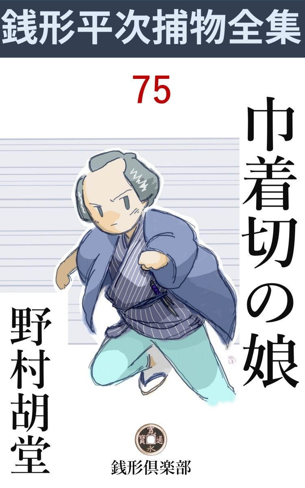
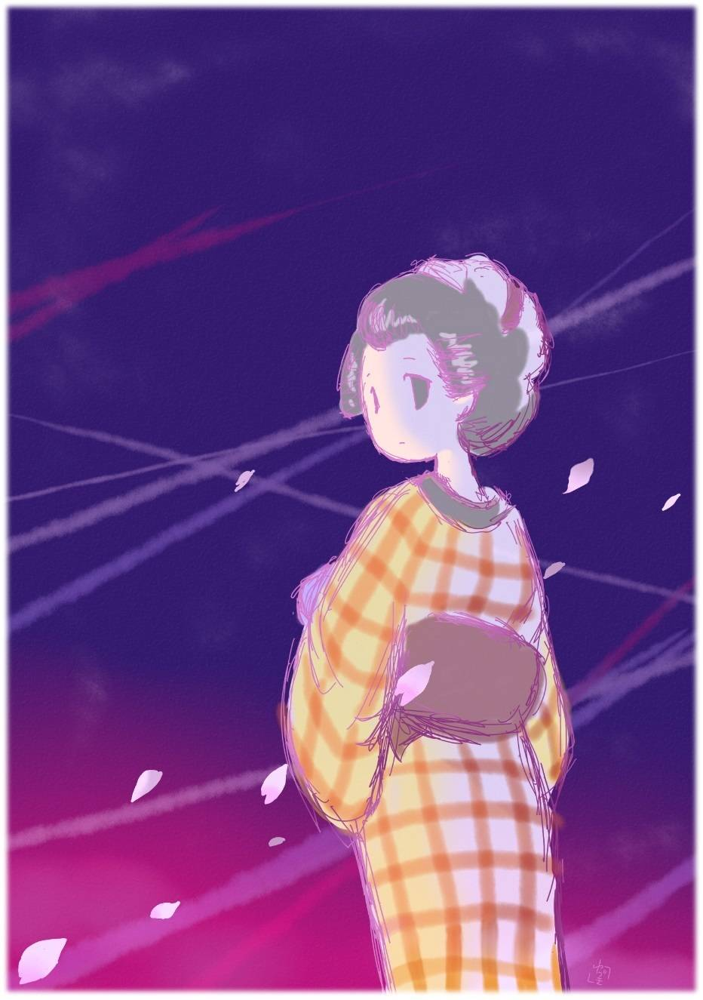

| 巾着切の娘: 銭形平次捕物全集第75話 (銭形倶楽部) | |
| 野村胡堂 | |
| ZENIGATA CLUB (2018) | |

一
「あッ危ねえ」
銭形の平次は辛 くも間に合いました。夜桜見物の帰りも絶 えた、両国橋の中ほど、若い二人の袂 を取って引戻したのは、ほんとうに精一杯の仕事だったのです。
「どうぞお見逃しを願います」
「どっこい待ちな、------そんな身投げの極 り文句なんか、素直に聞いちゃ居られねえ」
「死ななきゃならないわけがございます。どうぞ、親分」
争う 二人、平次は叩きのめすように、橋の欄干 に押付けました。
「頼むから静かにしてくれ。俺は横山町から駆け付けたんだ。息が切れて叶 わねえ、------意見をするのが面倒くさくなると、二人を縛って欄干に晒 し物にする気になるかも知れないぜ」
「親分さん」
「解ったよ。三百八十両の大金を巾着 切 にやられて、主人への申訳、言い交した女と一緒に、ドブンとやらかそうという筋だろう」
「えッ」
「お前は、増屋 の養子徳之助、------こちらはお富というんだってね」
「そう言う親分さんは？」
「神田の平次だ」
「あッ、銭形の------」
徳之助とお富は、死ぬ筈の身を忘れて、町の家並に傾 く桜月の薄明りの中に、江戸第一番の御用聞と言われた平次の顔を見直しました。
「横山町の店からの使いで飛んで行って見ると、------一度店へ帰ったお前が、お富と牒 し合せて飛出したという騒ぎのまっさい中だ。いずれは心中ものだろうと思ったが、永代へ行ったか両国へ行ったか、それとも向島へ遠走 りをしたか見当がつかねえ、------ともかく、近間の両国へ駆け付けて、幸い間に合ったからいいようなものの、これが永代へでも伸 された日にゃ、今頃は三途 の川で夜桜を眺めて居るぜ、危ねえ話だ」
そう言う平次の言葉を聞いて、
「------」
二人はゾッと襟 をかき合せました。助けられた今になって見ると、三途の川の夜桜が、あまり気味のいいものではなかったのです。
「さア行こうぜ、------店じゃ皆さんも大心配だ。わけても増屋の旦那は、三百八十両のことも忘れて、徳之助に若しもの事がなけりゃいいが------と居たり起 ったり、神棚に燈明をあげたり、見るも気の毒な程の気の揉みようだ」
「申訳もございません、------でも、私はこのまま店へ帰っては済まないことがございます」
「はてネ」
月明りの僅かに残る欄干 にもたれたまま、徳之助は苦悶 に打ちひしがれて、濡れでもしたように、しょんぼりと語り続けました。
十三の年、親を喪 った徳之助は、遠縁の増屋に引取られて、養子分で二十一まで働きましたが、増屋の主人三右衛門の慈愛が深まるにつれて、朋 輩 の嫉 妬 が激しく、三百八十両の大金を失っても、主人の三右衛門は許してくれるでしょうが、番頭手代は、決して腹の中では、許してくれないだろうと------こう言うのです。
その上、今日まで内証 にして居た、お富との仲が、この心中騒ぎで一ぺんに知れたら、他の奉公人の手前、主人の三右衛門も、素直に許してはくれないかも解らず、いずれにしても、二人揃って増屋の敷居を跨 ぐのは、どうも遠慮しなければならないように思われる、と言うのでした。
「それは一応尤 もだが、金は働いて返す折もあるだろうし、二人の仲は、いずれは知れずに済まねえだろう。店へ帰って、大恩ある主人に安心させるのが、何よりの孝行というものではないか」
平次は口を酸っぱくして説き勧めますが、若くて一徹 な二人は、心中仕損いの顔を、ノメノメと元の店へは持って行く気になりそうもありません。
「それでは、私のお父 さんは、すぐそこの浜町におります。行って相談して見ましょうか」
お富はこう言うのです。ようやく十九になったばかり、増屋の奉公人には相違ありませんが、女隠居の相手をしている可愛らしくも清らかな娘で、徳之助と並べると、歌舞伎芝居の道行を見るような、一種の情緒 を醺 し出さずには居ません。
死出の晴着のつもりでしょう。薄化粧に、一張羅 らしい銘仙を着て、赤い帯も、黒い髪も、水へも火へも飛込みそうな、純情無垢の象徴に見えて、平次の目には危っかしくてならないのでした。
「それはいいが、店では心配しているだろう」
平次はまだ、増屋の大騒ぎが目に見えるような気がするのです。
「親分------、横山町へは、あっし が一と走り行って来ますよ。二人を浜町へ連れて行っちゃどうでしょう」
月の隈 の中から、長い長い影法師 を曳 いて現れたのは、銭形平次の子分、ガラッ八の八五郎の忠実な姿でした。
二
「お父 さん」
「------」
「開けて下さいな、お父さん」
「誰だい」
「私よ、お父さん」
お富はそっと入口の戸の隙間 に顔を当てました。
「何処の狐が化けて来やがったんだ、畜生」
たまり兼ねて起出した様子、------火打 鉄 の音や、荒々しい足音にも、憤々 たる怒りはよく判ります。プーンと匂う硫黄 附 木 の匂い。
「そんな事を言わないで、お父さん」
お富はやるせない様子でした。幾度も幾度も------徳之助がそのまま逃げ出しでもするのを惧 れるように、------振返って後ろを見るのです。
「お店からさっき番頭さんが来て、手前 の不心得はみんな聞いてしまったぞ、馬鹿野郎。死ぬなら勝手に死ぬがいい、親にまで恥を掻かしやがって」
そう言いながらも、内からガラリと戸を開けました。灯 を背負った五十年配の屈強な親仁 、左官の彦兵衛といえば、仕事のうまいよりは、頑 固 一徹 なので界隈に知られた顔です。
「お父 さん、そういわずに、相談に乗って上げて下さい、------私達は本当に死ぬつもりだったのを親分さんに助けられて------こうしてお父さんのところへ帰って来たんです」
お富はそう言って、後ろに立った徳之助と、それから、銭形の平次を見やりました。
「------」
娘の沈んだ声も、打 萎 れた様子も、彦兵衛の怒りを宥 める由はなかったでしょう。
「お父さん」
「主人の養子をそそのかして、三百八十両の大金を持出させるような、そんな娘を俺は持った覚えはねえ」
「お父さん、それは、違いますよ。三百八十両は巾着 切 に取られ------」
「黙らないか。本所で巳刻 前に受取った金を、わざわざ花時の向島へ持込んで、巾着切に取られる奴があるものか、------その上お店 へ帰ったのは、薄暗くなってからだって言うじゃないか」
「お父さん」
「さア帰ってくれ。俺まで泥棒の仲間にされちゃ、売り込んだ顔に関 わる、------縄を附けて突き出さないのが、せめては親の慈悲だ」
彦兵衛は言うだけのことを言うと、娘と徳之助を暁闇 の中に残したまま、没 義 道 に戸をピシリと------
が、その戸は半分閉めかけたまま、銭形平次に押えられました。
「何をしやがるんだ」
彦兵衛は少し中ッ腹でした。
「彦兵衛、俺を忘れはしまいな」
「------」
「平次だ、------久振りだったな」
「あッ、銭形の親分」
僅かに残る月 光 りに透 して、左官の彦兵衛は仰天しました。
曽 ては浅草で左官をしていた彦兵衛、飲む、打つの道楽が嵩 じて、一時は巾着切の仲間にまで身を落しましたが、今から五年前、別れていた女房の末期の諫 めに、翻 然 として本心に立ち還 り、娘のお富を引取って、神田で堅人 に生れ変った経 緯 ------平次は何も彼 も知って居たのです。
お富は美しく清らかに生い立ちました。親父に巾着切の古 疵 があるとも知らぬ清純さ、それを見るのを唯一の楽しみに、彦兵衛は本当に真っ黒になって働きつづけたのです。
嫁入前の一と修業のつもりで、増屋の女隠居附に奉公させたのは一年前。それは娘を仕込む術 を知らない、男親の淋しさでしたが、彦兵衛はそれも辛抱して、何の邪念もなく、勤め上げて帰って来るお富を待って居たのでした。
それが、お店 の養子と勝手な事をして、三百八十両の大金を持逃げしたと番頭に聞かされ、罪の遺伝の恐ろしさに、彦兵衛は打ちひしがれながら、寝もやらず待っていると、顔見知りの銭形の平次に送られて、怪我もなく立ち戻って来たのです。
飛び付いて引摺り込んで、二つ三つ横っ面を張り飛ばして、それから犇 と抱きしめて、泣けるだけ泣いてやりたいような心持を我慢して、彦兵衛は没義道に戸を閉めたのに、何の不自然があるでしょう。平次が止めてくれなければ、お富が泣き濡れて、父親の胸に噛 り付くに定 って居るように思えたのです。
「じゃ、あの、娘を助けて下すったのは？」
彦兵衛の照れ臭さ。
「俺だよ、彦兵衛」
「------」
「浜町で堅気 に暮しているとは聞いたが、お富の親がお前とは知らなかった、------それにしても、五年前の彦兵衛とは、打って変った心持、この平次もすっかり感心してしまったよ」
平次は灯 の中に全身を現すと、こう心から老巾着切の心境を褒めるのでした。
「恐れ入ります、親分」
「それにつけても、お前の考えの間違っていることだけは言わなきゃなるまい。番頭は何と言ったか知らないが、三百八十両の金は、たしかに巾着切にやられたに違いない。二人の様子で、この平次は潔 白 を見届けたよ」
「へエ------」
「両国橋から飛込もうとするのを、どんなに骨を折って止めたか------捕縄を出して、欄 干 へ縛ろうかと思ったくらいだ。人間は、見栄や洒 落 で、夜中過ぎの大川へ、女づれで飛込めるものじゃねえ」
「------」
「増屋の主人は、徳之助の正直をよく見抜いていらっしゃる。奉公人達には嫉 みもひがみもあるだろうが、主人の信用さえ変らなきゃ、少しも驚くことはない------」
「へエ------」
彦兵衛はポロポロと涙をこぼして居りました。銭形平次が保証してくれれば、もう大手を振って江戸中を歩ける二人です。
「お富との仲が一ぺんに知れ渡って、このままでは横山町の店へ帰りにくいというだけの話さ。お前もよく若い二人に言い聞かせてくれ、------さア入った入った、父 さんは苦労人だ、よく解ってくれるよ」
平次は両方へそう言いながら、有明月の隈 に小さくなって居る二人を招きました。
三
貧しい灯の下に、二人を押し並べて、平次と彦兵衛は、死ぬ気になった無分別を叱ったり宥 めたりしました。
「三百八十両は大金だが、増屋の主人は諦 らめているし、奉公人並といっても、養子のお前だ。一生真面目に働いて、身上 を肥らせる気になれば、三百八十両は安い資本のようなものじゃないか」
平次はそう言ってやります。
「金せえありゃ、俺の手で何とでもするが、こんな暮しをして居ちゃ、三百八十両は愚 か、三両二分も覚 束 ねえ」
彦兵衛は口惜 しがるのです。悪事に栄えた昔の事を思い出したのでしょう。
「正直者はそれが本当さ、------ところで、どんな野郎が抜いたんだ。三百八十両が懐中から消えた後前 のことを、少し詳 しく聞かして貰おうか」
と平次。
「相生町 のお華客 で、三百八十両、小判で受取ったのは巳 刻 少しまえでした。まっすぐに両国へかかると、橋の袂 でどこかの小僧さんが待っていて、『増屋の主人が小 梅 の寮 に居るから、そっちへ持って行くように』という伝 言 です」
「フーム」
「別に疑う心持もなく、向島へ行くと、ちょうど花は真っ盛り、昼前だというのに、土 堤 は、こぼれそうな人出です。その間を縫うように、言 問 の近くまで------実は飛んだ儲 けのつもりで、花を眺め乍 ら行くと、いきなり突き当って喧嘩を吹っ掛けたものがあります」
「どんな野郎だい」
彦兵衛は横合から口を出しました。
「小鬢 の禿 げ上がった、薄あばたの男で」
「フーム」
「二つ三つ殴 られて、土堤の下へ転がされると、------それ喧嘩だッ------という人だかり」
「------」
「ようやくハネ退けて飛起きると、相手は人混みの中に飛込んでどこへ逃げたかわかりません。ハッと気が付いて懐中を見ると、三百八十両の小判を入れた財布は、紐を切られて抜かれてしまったのです」
「あの野郎、やりゃがったな」
彦兵衛は思当ることがあるらしく、拳固 で鼻の頭を撫で上げながら、詰め寄りました。
「びっくりして、気違いのように駆け廻りましたが、相手はどこへ逃げたか、影も形もありません。小梅の寮へ行って見ると、旦那がここへ来ているというのは真っ赤な嘘、よくよく企 まれたと気が付くと私はもう、死んでお詫 びをするより外に思案もなくなりました」
「------」
「日の暮れるまで死場所をさがして、あっちこっち歩きまわりましたが、どこへ行っても花見客で一パイ、日が暮れると足は横山町の方へ向いておりました。お富に逢って一と言、別れの言葉が言いたかったのです」
徳之助の肩はガクリと落ちて、鬢 のほつれも、白い頬も、あわれ深い姿です。
「一緒に死のうと言いましたのは、この私でした。お父さん、堪忍して下さい。------お父さん一人のこして死ぬと思うと、胸が張り裂 けるようでした。でも、徳之助さん一人殺して、私は生きている気がしません」
後ろからお富、伸した手はそっと、父親の膝小僧へ------
「ば、馬鹿なッ。親父をつかまえて、惚気 を聞かせる奴もねえものだ、へッ、へッ」
彦兵衛ははふり落ちる涙を、横なぐりに払って、歪 んだ笑いを絞り出しております。
「ところで、彦兵衛。その巾着切の薄 菊石 を、お前は心当りがありそうだが------」
平次は職業意識を取戻しました。
「それですよ、親分。若い者には聞かせたくねえ話で、------ちょいとお顔を」
彦兵衛は目顔に物を言わせて、滑るように明けかかった街へ出ました。
それを追って平次。二人はしばらく無言のまま、浜町河岸に立って、銀鼠から桃色に明けて行く大川端の春を眺めております。
「彦兵衛------薄 菊石 の巾着切は誰だ。早い方がいい。今から手を廻したら、金が戻るかも知れねえ」
平次は口を切りました。
「描 き菊石 の東作 という野郎で、------仕事をする時だけ、自分の顔へ絵の具で菊石を描くほどの用心深い奴ですよ」
「どこにいる、少しでも早い方がいい」
「ね、親分さん、------これはあっし に任せて下さいませんか」
「------」
「十手捕縄じゃ------そんな事を言っちゃ悪いが、後口のよくねえことがあります。彦兵衛が一世一代、身体を張ってきっと型をつけます。こいつはあっしに任しておくんなさいまし」
彦兵衛は思い切ってこう言うのです。
「それはまた、どうしたわけだ」
と平次。
「増屋の嫁になろうという娘の耳に、あっし の素姓 を知らせたくはありません。------それにあの東作の仕事振りを、あっし はよく知って居ります。これは企 みに企んだ上のことで、金を隠して、描き菊石を洗って居た日には、親分が踏込みなすっても、どうすることも出来ません」
「その時は手前 が活 証人 になってくれるだろう。なア、彦兵衛」
「なれと仰しゃればなりますが、その代りあっしの素姓は明るみに曝 されて、娘は死ぬほど焦 れても、増屋の嫁になれっこはありません------相対死を助けて貰っても、一人死をさせちゃ、反 って不 憫 じゃございませんか、親分」
「------」
「三百八十両の金を取り戻し、徳之助とお富を無事に増屋に帰した上で、菊石の東作を縛るなり叩くなり、勝手になすっておくんなさい。ね、親分------銭形の親分さんを見込んで、この彦兵衛が一生一度のお願いでございます」
いつの間にやら彦兵衛は、朝の大地の上に崩 折 れて、銭形平次を拝んでいたのです。
「よし、判った。たった三日、日限 を切って待ってやろう。手前の改心を見届けた平次があの可愛らしい娘への土産代りだ」
「有難うございます、親分」
「いいよ、俺は拝まれるのはあんまり好きじゃねえ------大変な泥だぜ、仕様がねえなア」
平次は彦兵衛を起してやって、その胸から膝へ一面に附いた土 埃 を払ってやりました。
もう出始めた街の人達、酔っ払いの介抱とでも思ったのか、それを遠巻きに見て居るのでした。
四
田原町の経師屋 東作、四十年輩の気のきいた男ですが、これが描き菊石 の東作といわれた、稀 代 の兇賊と知る者は滅多にありません。
その奥の、思いの外贅 を尽した一と間に、主人の東作と、左官の彦兵衛は相対しました。
「久し振りだね、彦兄イ。眼と鼻の間に住んでいても、稼業 が違うと、こうも逢わないものか」
東作は渋い茶一杯淹 れるでもない冷たい態度で、少し茶かし加減にこう言うのでした。
「お蔭で地道な貧乏暮しも四年とつづいたが------今日はね東作、少しお願いがあって来たんだが」
彦兵衛は居心地が悪そうにモジモジしながら、思い切った様子で切出しました。
「ハテネ、堅気のお前さんからの頼み、というと、袋戸棚の唐 紙 でも貼って貰いたいと言うのかい」
東作は煙草盆を引寄せて一服吸付け、長閑 な煙を長々と吐きました。プーンと高貴な、国 府 の薫り------。
「外じゃねえ。昨日向島で抜いた、増屋の息子の三百八十両」
「何を言うんだい、彦兄イ。向島だの、三百八十両だのと------俺はもう悪事とは縁切りさ。三年前から堅気になって、近頃では左官の彦兵衛と同じように通用する経師 屋 の東作だ。可 怪 しな事を言って貰いたくないね」
「そうでもあろうが東作、------俺が聞いた手口は、昔のままの描 き菊石 だ。あの三百八十両を抜かれたばかりに、昨夜は両国橋から、危なく若い二人、身を投げるところよ」
「一人は彦兄イの------娘お富さんとか言ったね」
「それまで知っているなら、言うだけ野暮 だ。なア、東作、昔の誼 。その三百八十両を、この彦兵衛の顔に免じて返してくれ、きっと恩に被 る------」
「それじゃ彦兄イ、本気でそんな事を言いに来たのか」
「本気も、本気この通りだ。娘の命にも関 わること、愚 に返った彦兵衛が一生の頼みだ。聞いてくれ、東作」
彦兵衛は両手を畳に下ろして、涙ぐんでさえ居たのです。
「やい、彦兄イ」
「------」
「いやさ彦兵衛。年のせいかは知らねえが、大層手前 はボヤケやがったな」
東作は銀煙管を逆手構 に、火鉢を小楯 に取って屹 となりました。
「東作、頼む」
「東作東作、と、安くして貰いたくねえ。昔は悪党仲間の兄イ分だろうが、------稼 いだ金をそっくり返せというのは、こちとらにはねえ仁義だ。巫 山 戯 た事を言やがると、彦兵衛だろうが朴 念 仁 だろうが、勘弁しねえぞ」
「解ったよ、東作。手前の腹を立てるのも無理はねえが、------俺の方にも少しばかり言いてえことがある」
「------」
「娘の命を助けたのは、他じゃねえ、銭形の平次親分だ。三百八十両抜いたのは、描 き菊石 の東作と話すと------」
「何？」
「まア、待ってくれ。俺は一生懸命平次親分をなだめて、三百八十両は、見事この彦兵衛が貰って来るからと、ようやく引取って貰ったのは、ツイ先刻だ」
「それじゃ、手前、銭形の平次に、この俺の事までベラベラと饒 舌 ってしまったのか」
東作はカンカンに腹を立てながらも、襟元の薄寒さを感じました。銭形平次に睨まれることは、悪党仲間に取っても致 命 的 な恐怖です。
「娘の命を助けたさの行きがかりだ------それは仕方があるものか。三百八十両の金を返してくれさえすれば、平次親分に頼んで、今度のことは眼をつぶって貰う工夫もあるだろう。なア、東作」
「御免蒙 ろう」
「何？」
「岡っ引に脅 かされて獲物を吐き出したとあっちゃ、この東作の名折れだ。今すぐ長い草鞋 を穿 くまでも、そいつは御免蒙ろうよ」
「どうあってもか、東作」
「いやに東作、東作って言やがるじゃないか。誰が何と言っても嫌だよ。判ったかい、彦兵衛」
「野郎ッ」
二人は睨み合いました。争闘を始める一瞬前の猛獣のように------。
「ハッハッハッハッハッ、年は取っても、娑婆 っ気は抜けねえぜ。飛んだいい気合だよ、彦兄イ」
急に笑い出した東作の顔を、彦兵衛は眉も動かさずに睨み据えます。
「三百八十両、事と次第によっては、ずいぶん返してやらないものではないが、その代り、礼はするだろうな、彦兄イ」
「礼？ ------それはするとも、その日暮しの左官には、どうせろくな礼も出来ないが」
彦兵衛は緊張が緩 んで、思わず肩を落しました。相手の様子に妥協的なものを読んだのです。
「礼と言ったところで、銭や金じゃねえ」
「------」
「俺には少し望みがあるんだ。------外じゃねえ、三百八十両返しゃ、徳之助も無事に増屋に納まるだろう、お富とはどうせない縁と二人を諦めさせて、お富をこの東作の女房にくれる気はないか」
「な、何だと」
東作は大変なことを言い出しました。
「それが嫌なら、増屋へ乗込んで、手前の素性を皆んなバラしてやるまでよ。江戸で指折の大 店 が、巾着切の娘を嫁にするかしないか。こいつは面白いぜ、なア彦兄イ」
「手前それは正気で言うのか、東作」
「正気も正気、この通り、酔っても寝ぼけても居るわけじゃねえ。年は少し違うが、まだ厄 前 の東作に、十九のお富が不釣合とは言わさねえ。巾着切の娘が巾着切の女房、こんな似合いの縁があるものか」
「野郎ッ」
「まア、怒るな、彦兄イ。俺は二三年前から、お富坊に眼をつけて居たんだ、------この縁談さえ承知なら三百八十両は結 納 代 り、熨 斗 をつけて差上げるよ」
「------」
東作の太々 しさと、その企 みの深さに圧倒されて、彦兵衛は燃ゆる眼に宙を見たまま、血の出るほど唇を噛みました。
浜町の家では、お富と徳之助が、平次に言い宥 められながら、事情を知らないながらも、何やら吉報らしいものを待っていることでしょう。
五
お富を一人残して、徳之助だけ店へ帰すのは、彦兵衛の方では不 可 能 なことでした。
死の一歩手前まで行った二人は、恥も外聞も、義理も体面も捨てて、もう一瞬も側を離れようとはしなかったのです。
幸い、増屋の主人三右衛門からの伝言 で、二人を一緒にする前提として、しばらくは世間体を兼ねて、お富は浜町の父親の許に留めるのが穏当だろうということになり、迎いに来た手代に連れられて、灯の入る頃、徳之助はようやく横山町へ帰る気になりました。
「お富、------若旦那はお店へ帰ったが、三百八十両の金が戻らなきゃ、親類方や古い奉公人の手前、増屋の跡取りに直るのがむずかしい事は、お前にも判るだろうな」
改めて彦兵衛は、娘に因果 を含めるのでした。
「------」
それは併 し、何の前提やら父親の気持を測 り兼ねて、お富は美しい瞳を挙げました。
「増屋から追出されても、裏長屋に住んでも、二人一緒に暮せるから------とお前は思うだろうが、それじゃ世上の義理が済まねえ」
「------」
「男の出世を妨 げるのは、何と言ってもつれ添 う女の恥だ。解るか、お富」
「え」
「それが解るなら、今晩ほんのしばらく、厭 な客に附き合ってくれ------三百八十両の手土産を持って来る客だ」
「お父 さん、それは？」
「察しの通り巾着切りの東作という男だが、深いわけがあって、表沙汰にしたくないのだよ。判るか、お富」
子供の時別れて、五年前母親の臨終 の床 で、久振りに逢った父親ですが、それから五年の間の愛育は、世の常の五十年の恩にも超 えて深いものでした。
世にこんな良い父親があるということは子として、何という誇 らしいことでしょう。
お富は何時でも、半白の鬢 から、後光が射すような心持で、父親彦兵衛を見て来たのです。
「お父 さん、------私には何にも判らないけれど、父さんが良いと思うことならどんな事でもやってみましょう」
お富はそれほど父親を信頼し切って居たのでした。経師屋東作、描 き菊石 と綽 名 のある大悪党が、押掛け聟に来るとは元より知る由もありません。
間もなく、東作が町駕籠で乗込んで来ました。
「爺さん、酉刻 だ、早過ぎはしないだろうね」
さすがに極りが悪かったものか、少し面を冠って、笑み割れた頬が、とろけて落そうなのも不気味です。
「まア入 んな、------お富、お富、俺の古馴染の東作さんだ。挨拶をするがいい」
狭い家、逃げも隠れもならぬお富は、行燈 の蔭に小さくなりました。
「お富坊、相変らず美しいことだな。今晩から俺はここの人だよ、お前とは------」
「シッ、余計なことを言うな。若い者はびっくりするじゃないか」
彦兵衛は精一杯の眼顔を働かせます。どうしても承知しなかった東作を説き落して、お富との祝言は、いずれ徳之助と縁が切れてから、改めて盃事 をするとして、今晩はほんの見合だけ------という事で話をつけたのです。
「へッ、へッ、へッ、そう言ったものかいなアお富坊、こう見えても、俺は日本一の親切者さ。お富坊に気に入るように、三百八十両の金はちゃんと此処に持って来たよ。次第によっちゃ熨 斗 をつけないものでもない------なアお富坊、今晩にもこの俺の女房になる気はないかえ」
しな垂れかかる四十男の醜さ、お富はゾッと寒気がして、父親の背後に逃げ込みました。
「お富、------あれほど言って置いたじゃないか、酌 をして上げな」
「ハイ」
「なア、東作。夜は長げえ、まず御輿 を据 えて飲むがいい、------そのうちにはお富も、一と晩経てば、一と晩だけ年を取るというものだ」
「その代りお互いも一と晩年を取るぜ、へッへッ。だが、全く堪 らねえぜ、------お富坊の酌で飲むなんて、俺は三年越夢に見た図だが、昨日 までもこんな幸せにあり付こうとは思わなかったよ」
「だからよ、存分に飲みな」
「介抱 はお富坊に頼むか、ゲープ」
東作は鯨 のように飲みました。逃げ腰のお富は、彦兵衛に眼で叱 られて、観念し切った手に銚子を挙げるのです。これが徳之助を救う方法と聞かされなかったら、どんなに父親が引止めたところで、四半刻とも我慢をするお富ではなかったでしょう。
酉刻 から亥刻 まで、呑んで、呑んで、東作はとうとう正体を失いました。
「いい塩梅 に眠ったようだ。お富、枕を持って来な、------それから、行燈 を退 かせるのだ」
「------」
黙って行燈を退 かせ、杯盤 をざっと片附けて、お富は部屋の隅にふるえております。
「驚くことはない。少し静かにしたら、よく落着くだろう」
「------」
「飛んだ獣 に附合いさせて、気の毒だったなア。お富、その代り、この跡始末は俺がしてやる」
彦兵衛は乱酔して、正体もなく眠りこけた東作の側に膝行 寄りました。
「お父 さん」
お富は思わず声を出しました。父親の手が妙に物馴れた滑らかさで、何にも知らずに眠っている、東作の懐中にスルスルと入って行くではありませんか。
「抜かれた物を抜くまでのことだ。驚くことはない」
ズルズルと抽出 したのは、蛙を呑んだ蛇のように、恐ろしく脹 らんだ胴巻。
「ウ、ウン、ウ、ウ」
うなされたように、寝返りを打つ東作。
「------」
彦兵衛の右手には、キラリと匕首 が光りました。
「お父 さん」
「大丈夫だ、心配するな。こんな毒虫は、人助けのために命を取っても仔 細 はないが、俺は卑怯 な人殺しはしねえ」
「------」
「お前はその胴巻を持って、横山町の増屋へ行ってくれ、------此処にまごまごして居て、この野郎が眼を覚すと、後が面倒だ」
「お父さん」
「手触りでもよく解る。中は確か三百八十両。少し重いが、男一人の命にも関 わった金だ、しっかり持って行け」
胴巻を娘の帯の下へ廻しながら、彦兵衛はそう言い続けます。
もう子刻 近いでしょう。街は灰を撒 いたように鎮まって、朧月 の精のように、ヒラヒラと飛んで来る花片。
「父さん、それじゃ」
お富は三百八十両の小判を背負 って、一歩真夜中の街へ踏出しました。
「命がけの金だぜ、お富」
「ハイ」
「これが暫くの別れになろうも知れない」
「お父さん」
「なアに、そんな事があるものか。明日はまた逢おう、いいか、お富」

六
娘を夜の冒険に送り出して、引返した彦兵衛。行燈の灯りの中に、動物のように乱酔 した身体を横 えた東作を、憎々しく見詰めましたが、いきなりハタと枕 を蹴って、
「野郎、起きろ」
低いが、圧 し付けるような声を浴びせました。
「ウ、ウ、ウ」
ゴロリと寝返りを打った東作、それ位のことでは、なかなか目を覚しそうもありません。
「只の酒だと思って、よくも食 いやがったな、畜生ッ、どうするか見るがいい」
勝手から持出した手桶 、井戸端へ行って二た釣瓶 まで汲み入れ、満々と水を湛 えたのを持って、東作の枕元に突っ立ちました。
「水 垢 離 を使わせてやる、驚くな」
高々と持ち上げた手桶から、ドッと一条の飛瀑 、熟睡した東作の眼へ鼻へ口へ、いや、顔も襟も胸も、上半身一ぱいにブチまけたのです。
「ワッ、な、何をしやがる」
ガバと飛起きた東作。
「騒ぐな、家は借家だ。望みとあらば、もう二三杯食わせてやろうか」
手桶を振り冠ったまま、彦兵衛の啖呵 は虹を掛けます。
「や、や、胴巻を抜きやがったな」
立ち上がって自分の懐中を捜 った東作、さすがに酒の酔いも覚めました。
「当り前 よ、油断をした懐中から抜くのは巾着切の手柄だ。ざまア見やがれ」
「爺奴 、一杯食わせたな」
濡れ腐 った袷 をかなぐり捨てると、逞 ましい素 っ赤裸 、東作は行燈を小 楯 に屹 と身構えます。
「金を抜いて娘をくれと抜かしやがったな。手前 は江戸の巾着切の面 汚 しだ。弁天様のような娘を、そんなモモンガアの餌にしてたまるものか。少しは目が覚めたか、馬鹿野郎ッ」
「その娘を、ヌケヌケと増屋の嫁にする気だろうが、そんな甘いわけに行くものか」
「俺の方でも手前を銭形の親分に引渡す筈だが、------昔の誼 、縄を打たせちゃ気の毒だ」
「何を、老ぼれ」
「何方も抜き差しならねえ破目 だ。仲間の仕来りは、こんな時には二挺 の匕首に物を言わせる外はねえ」
「何？」
「さア、そいつを持って柳原の土 堤 まで来い。地獄の旅へ、何方が先に踏出すか」
ガラリと投げた匕首 、行燈の影から手を出して、東作はあわてて一挺を拾いました。
「しゃら臭え、来いッ、爺奴」
二人は毱 の如く、朧 月 の街に飛び出したのです。
× ×
それから一と月、江戸は青葉の風薫 る頃となりました。三百八十両を取り返したのは、彦兵衛お富の親娘 の手柄と判って、徳之助の家督相続にも、お富との祝言にも、今は文句を言う人もありません。
左官の彦兵衛は仮親を立てて貰うように、強 って主張しました。------万一自分の素姓が知れた時の用心だったのでしょう。増屋の主人は、それを世間並の遠慮と思い込んで、反対し続けて来ましたが、最後には折れて出て、一応増屋の親戚の養女と披 露 し、それから改めて正式の輿入れになりました。
今日はいよいよ徳之助とお富の祝言という日。
浜町の貧しい父親の許に、暇乞 に来たお富は、近所の人達に包囲されて、しばらくは、祝いの言葉と、羨望 の感動詞と、あらゆる目出度いものの渦の中にもみ抜かれました。
「まア、何て綺麗でしょう」
「お富さんは本当に仕合せねえ」
「時々は浜町へもいらっしゃいな」
そんな言葉の中に、盛装 したお富と、相変らぬ布子 一枚の彦兵衛は、唯 おろおろするばかりでした。
「それじゃ、お父 さん」
やがて傾 く陽、お富は尽きぬ名残を惜しみながら、店から廻された駕籠の中に納まりました。
「お富、達者で暮せよ」
戸口まで送って出た彦兵衛の眼には、涙が光って居ります。
「お父さん、時々は横山町へ来て下さるでしょうね」
お富は美しい髪を気にしながら、駕籠の中から顔を出して、咲き立ての花のように、四方の空気を匂わせます。
「行くよ、行くには行くがな、------親父 が娘の嫁入先へ、ウロウロ行くのは、あまり見っともいいものじゃねえ」
「でも、お父さん」
「心配するな、時々はお前も顔を見せてくれ。言うまでもねえ事だが、夫を大事に、御主人や御隠居によく仕えるのだよ」
「ハイ」
「やれやれ、これで俺も安心だ。死んだおっ母アも、さぞ喜んでいるだろう」
「お父さん」
駕籠は上がりました。親と娘を隔 てる、町の女房、娘達、美しく華 やかな夕陽の中に、あやかりものの駕籠を、何処までも追います。
それを立ち尽して見送る彦兵衛。
「------」
黙って半白の頭を振りました。涙はポロポロと、赤銅 色 の頬を伝わって、土間の土くれを濡らします。
そっと肩に手を置く者。振返ると、
「彦兵衛」
銭形平次が立って居るではありませんか。
「親分」
「お慈悲は過ぎたぞ、------この上のお目こぼしは、役人方の落度になる」
「覚悟は出来て居ります、親分」
彦兵衛は静かに後ろへ手を廻しました。
「経師屋 東作殺しの下手人、神妙にせい」
「親分、有難うございました。お蔭で娘は、何にも知らずに、あの通り------」
街の夕陽の中に薄れ行く駕籠、それを見送って、彦兵衛は声もなく泣くのです。
「笹野 様の御慈悲だ------それもこれも。さア立て」
「親分、この彦兵衛が最後の願い、もう一つだけ無理を聞いて下さい」
「------」
「お願いだ、親分。あの娘には、何にも知らせたくはありません。私の居ないのを不思議に思ったら、亡妻 の菩 提 を弔 うため、西国巡礼に出た------とそう言って置いて下さい」
彦兵衛は自分の襟に深々と顔を埋めます。
「いいとも、この一埒 は笹野様も御奉行様も御存じだ。東作はお上でも持て余した悪党、それを害 めたところで、大したおとがめはあるめえ------お富に初孫が出来る頃までには、手前 も西国巡礼の旅から帰って来られるだろうよ」
「親分、何にも言わねえ」
彦兵衛は崩 折 れました。合せた手が顎 の下に、涙に濡れてワナワナと顫えます。
「八、見っともねえ、そんなものを引込めろ」
「へエ------」
後ろから来た八五郎は、あわてて捕縄を引込めました。どっと起る街の歓声 、花嫁の駕籠を見付けた、子供達の声でしょう。
（編注）
作品中には、身体の障害や人権にかかわる、差別的な語句や表現が見られますが、本書が成立した当時の時代背景等が現代とは異なる古典的な文学作品でもあり、著者が故人でもありますので、底本のままとしました。ご理解、ご諒承のほどをお願い申し上げます。
著者---野村胡堂
挿絵---萩 柚月 © 2017
初出---「オール讀物 臨時増刊 皇軍慰問全集」 文藝春秋社 昭和十三年四月十五日発行
底本---「銭形平次捕物全集」第四巻 河出書房 昭和三十一年六月三十日初版
編集・発行 銭形倶楽部